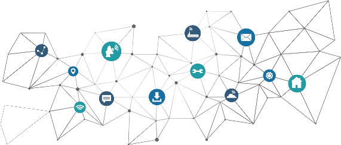

San Judas Tadeo
UNIDAD EDUCATIVA PARTICULAR

Una vez Finalizado su proceso educativo en esta especialidad el Bachiller estará preparado y capacitado para: Resolver problemas informáticos, así como el desarrollo de software de base y aplicaciones importantes. Liderar el desarrollo de proyectos de software y gestionarlos.
10 meses por periodo Lectivo (1ro, 2do, 3ro Bachillerato).
Bachiller Técnico en Informática.
Avalado por el Ministerio de Educación de la República del Ecuador
Una vez egresado como Bachiller Técnico en Informática, estas son las carreras que puedes elegir para continuar tu formación Universitaria: Ingeniería en Sistemas de Computación e Informática, Ingeniería Informática, Ingeniería en Sistemas de Concentración y Desarrollo de Sistemas.
La especialidad de Informática presenta un vasto campo laboral tales como: Programador web, Consultor tecnológico, Diseñador de sistemas informáticos, Administrador de sistemas y redes, Analista de sistemas informáticos, Creador de videojuegos y aplicaciones, Creador de aplicaciones móviles, Gestor de proyectos informáticos, Docente, entre otras.